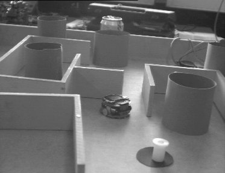
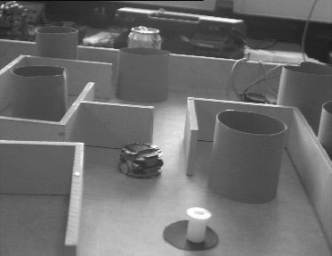
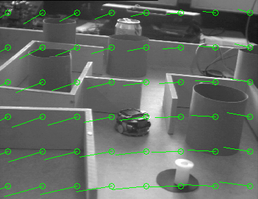
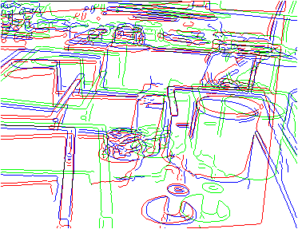
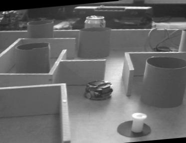
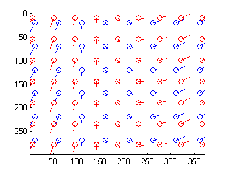
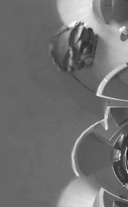
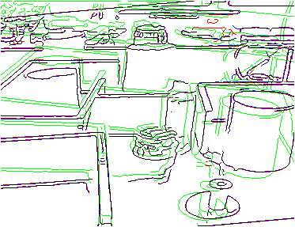
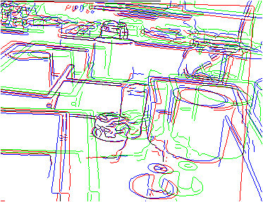

Affine Optic Flow Demonstration
David Young
Demonstration of estimation of an affine (first-order) optic flow field from a pair of images, using affine_flow.
Contents
Setting up test images
We read in two test images. These should be in the current directory.
The camera moved sideways between capturing these two images. The objects lie on a table top, so the features lie very roughly in a plane. As a result, the first-order flow provides an approximation to the true flow, though it does not capture its details or exact form.
% Convert to double for later processing. It's convenient to scale into the % range 0 to 1 for imshow. im1 = double(imread('maze1.png'))/256; im2 = double(imread('maze2.png'))/256; figure; imshow(im1); figure; imshow(im2); 
Measuring flow with conventional sampling
We start by using the default rectilinear sampling.
The motion between the test images is quite large, so to measure it we need to smooth quite heavily. We try a sigma of 25 pixels, and also sample every 25 pixels to cut down computation.
af = affine_flow('image1', im1, 'image2', im2, ... 'sigmaXY', 25, 'sampleStep', 25); af = af.findFlow; flow = af.flowStruct;
We can inspect the numbers for the estimated flow.
Printing the flow structure shows the magnitudes of the flow components. See the help information for affine_flow to find out what these components mean. Note that the large negative value for vx0 corresponds to the overall shift of the second image to the left, and the relatively large value for s2 is a result of the shear caused by the depth gradient in the image.
disp(flow);
vx0: -27.3883
vy0: 19.9185
d: 0.0173
r: 0.0197
s1: 0.0183
s2: -0.0896
And we can display the estimated flow graphically.
A set of flow vectors illustrating the estimated flow field is displayed on the first image. This does not show the points at which the flow was computed; these are just representative vectors at arbitrary points to show the form of the first-order model.
The flow vectors near the bottom of the image are larger than those higher up. This is because the surface is closer to the camera in this region; the flow vectors are like stereo disparities, larger (for parallel cameras) for closer objects.
affine_flowdisplay(flow, im1, 50);
We check whether the estimated flow registers the images.
We can see whether the flow that has been found maps the first image onto the second, by displaying edges. Here, the green edges are the original first image, the blue edges are the second image, and the red edges are the first image after warping by the flow.
If the process has worked correctly, the red and blue edges should be close together. We do not expect exact overlap because the first-order flow can only be an approximate, smooth, model of the true flow. Even the overall form of the real flow is a perspective rather than an affine transformation, and there is a lot of depth variation which adds complexity. Nonetheless, the affine flow gives a respectable first approximation.
affine_flowedgedisplay(flow, im1, im2);
Assessing accuracy using synthetic flow
One way to assess the accuracy of the flow estimation is to synthesise the second image by warping the first with a known flow field, then seeing if we can recover the parameters of the field.
First, we set some parameters, look at the flow field they generate, and warp the first image according to this flow.
% The parameters for the test flow field ftest.vx0 = 5; % flow at centre of image (values changed later when ftest.vy0 = 5; % origin is moved) ftest.d = 0.05; ftest.r = -0.05; ftest.s1 = 0.05; ftest.s2 = -0.05; % Shift origin to image origin ftest = affine_flow.shift(ftest, -(size(im1,2)+1)/2, -(size(im1,1)+1)/2); % Warp the first image wtest = affine_flow.warp(ftest); % convert to a warping matrix ttest = maketform('affine', wtest); % make a transform structure imtrans = imtransform_same(im1, ttest); % Display the transformed image imshow(imtrans);
The flow is estimated as for the real image pair.
In general, sigmaXY (the smoothing constant) needs to be set either using some prior knowledge of the likely maximum flow speed, or by experiment. The spatial scale of the smoothing needs to be comparable to the maximum optic flow speed.
In this case it is easy to estimate the order of magnitude of the flow from the known parameters and the image size (use the equation in affine_flow's help) and a value of 10 for the smoothing constant seems reasonable. It would be possible to refine this experimentally, given an error measure, a set of images, and a set of flow fields.
Since we know the images will be smoothed on a scale of 10 pixels, we can cut down the computation by sampling the gradients every tenth row and column before solving the least-squares problem. This is done with the sampleStep parameter.
We can see that the estimates are in the right region; whether they are adequate for any task depends, of course, on the application.
af.sigmaXY = 10; af.sampleStep = 10; af.image2 = imtrans; af = af.findFlow; ffound = af.flowStruct; % Inspect the values disp('The test flow parameters:'); disp(ftest); disp('The recovered flow parameters:'); disp(ffound); % Show the input flow field in blue and the recovered flow field in red, % with slightly different positioning so that both sets of vectors can be % seen. clf; affine_flowdisplay(ftest, size(im1), 50, 'b'); affine_flowdisplay(ffound, size(im1), 45, 'r');
The test flow parameters:
vx0: -13.6500
vy0: 23.6500
d: 0.0500
r: -0.0500
s1: 0.0500
s2: -0.0500
The recovered flow parameters:
vx0: -13.3722
vy0: 23.9026
d: 0.0501
r: -0.0505
s1: 0.0488
s2: -0.0504
 Finding flow using log-polar sampling
The rest of this demonstration deals with an alternative approach to the computation associated with ideas in foveal vision and active vision. It can be ignored if you only want standard Lucas-Kanade flow estimation.
Log-polar image sampling can be an accurate and effective way to estimate first-order flow, because the sample spacing can vary with the flow speed across the image, provided that a point in the image is tracked. This is explained here. The affine_flow class will work in log-polar space as an option, using the method described in the paper.
To see what this means, we can display a log-polar sampled image. This is done below, but note that this is for illustration only - affine_flow does its own resampling, and you always give it the original images to work on.
The log-polar image appears distorted when displayed on the screen using imshow. The rings become vertical lines in the display and the wedges become horizontal lines. Dilation (the D in the optic flow equations) becomes a horizontal shift in this picture, and rotation (R) becomes a vertical shift. Translation and shear have more complex effects on the log-polar image, but it is still easy to estimate them.
If required, affine_flow resamples both images to log-polar coordinates, and takes advantage of the change in resolution to estimate first-order flow. To do this, it shifts the log-polar centre for the second image using its initial estimate of the flow, so as to track the motion. This produces low flow speeds at the high-resolution centre of the sampling pattern, with the flow speed increasing (for pure first-order flow) linearly with radius, matching the sample separation.
rmin = 3; % See help logsample for what these rmax = min(size(im1))/2; % parameters mean xc = size(im1,2)/2; yc = size(im1,1)/2; nw = 300; logim = logsample(im1, rmin, rmax, xc, yc, [], nw); imshow(logim);
First, we estimate the flow without tracking.
As with the conventional approach, we need to set a smoothing constant. We will also set some other sampling parameters - see the help information for logsample.
Smoothing is done on the resampled log-polar image, so the smoothing constant can be smaller than in the conventional case - if the translation is not too great, the expected norm of the first-order components divided by the angle between wedges is a reasonable order of magnitude. (The angle between wedges is 2*pi/logWedges.) Here, we adopt 200 wedges and a smoothing constant of 4, but experimentation on a range of images and flow fields could be done.
We set logRmin to 5 - it isn't critical, but small rings suffer badly from the mismatch between the original image resolution and the higher resolution that the foveal centre of the log-polar image ought to have, and there is little point in making logRmin too small.
We set logRmax to 100 pixels. Setting it explicitly allows us to compare the results without and with tracking.
With no tracking, the function makes a single estimate of the flow field, with both log-polar patterns centred at the centres of the images (the default).
We see that the estimate is reasonable, but not as accurate as the conventional computation above. The lastSpeed field shows that the image was estimated to be moving past the centre of the sampling pattern at about 7 pixels/frame - enough to destroy any contribution from the high-resolution inner rings.
af.sampleMethod = 'logpolar'; af.logWedges = 200; af.sigmaRW = 4; af.logRmin = 5; af.logRmax = 100; af.maxIter = 1; % No tracking af = af.findFlow; ffound = af.flowStruct; % Compare true flow and result disp('Test flow parameters:'); disp(ftest); disp('Recovered flow, log-polar sampling, no tracking:'); disp(ffound); % Display tracking parameters disp('Tracking information:'); disp(af.trackInfo);
Test flow parameters:
vx0: -13.6500
vy0: 23.6500
d: 0.0500
r: -0.0500
s1: 0.0500
s2: -0.0500
Recovered flow, log-polar sampling, no tracking:
vx0: -18.0420
vy0: 24.1887
d: 0.0515
r: -0.0519
s1: 0.0612
s2: -0.0415
Tracking information:
lastCentre: [186.5000 144]
lastSpeed: 6.9752
numIter: 1
We now switch on tracking, keeping all the other parameters the same.
The estimates, especially of vx0 and vy0, become more accurate. Three iterations were done and we can see from the lastSpeed field of the result that the estimated residual flow at the sampling centre on the final iteration was very close to zero. That is, accurate tracking was probably taking place.
Displaying the edges shows almost exact registration - as we would expect, given that the synthetic flow is purely first-order.
af.maxIter = 5; % allow up to 5 iterations af.velTol = 0.5; % but stop if centre flow speed drops below 1 pixel/frame af = af.findFlow; ffound = af.flowStruct; % Compare true flow and result disp('Test flow parameters:'); disp(ftest); disp('Recovered flow, log-polar sampling, tracking:'); disp(ffound); disp('Tracking information:'); disp(af.trackInfo); % and a visual check affine_flowedgedisplay(ffound, im1, imtrans);
Test flow parameters:
vx0: -13.6500
vy0: 23.6500
d: 0.0500
r: -0.0500
s1: 0.0500
s2: -0.0500
Recovered flow, log-polar sampling, tracking:
vx0: -13.6932
vy0: 23.0816
d: 0.0483
r: -0.0505
s1: 0.0484
s2: -0.0462
Tracking information:
lastCentre: [191.4387 149.0515]
lastSpeed: 0.0273
numIter: 3
 We now perform the same operation but using the real image pair. Only a qualitative comparison with the conventional approach is possible, but the log-polar method appears to perform somewhat better in this case.
af.image2 = im2; % second real image af = af.findFlow; ffound = af.flowStruct; disp('Recovered flow for real images:'); disp(ffound); disp('Tracking information:'); disp(af.trackInfo); % and a visual check affine_flowedgedisplay(ffound, im1, im2);
Recovered flow for real images:
vx0: -28.2079
vy0: -0.1583
d: 0.0189
r: 0.0484
s1: 0.0234
s2: -0.0253
Tracking information:
lastCentre: [155.8251 147.5762]
lastSpeed: 0.2643
numIter: 4
 Final note
Some features of this class - notably the use of a region of interest mask - have not been explored in this demo.
The class demonstrated here can be used in a variety of modes. It has been shown estimating the global flow field across the whole image, but it can be also be used to make local estimates of the flow field. This is done with the rectRegion or regionOfInterest options for conventional sampling, or by setting logRmax and logCentre for log-polar sampling. A good context for this is active vision systems associated with robot control.
Copyright David Young 2010